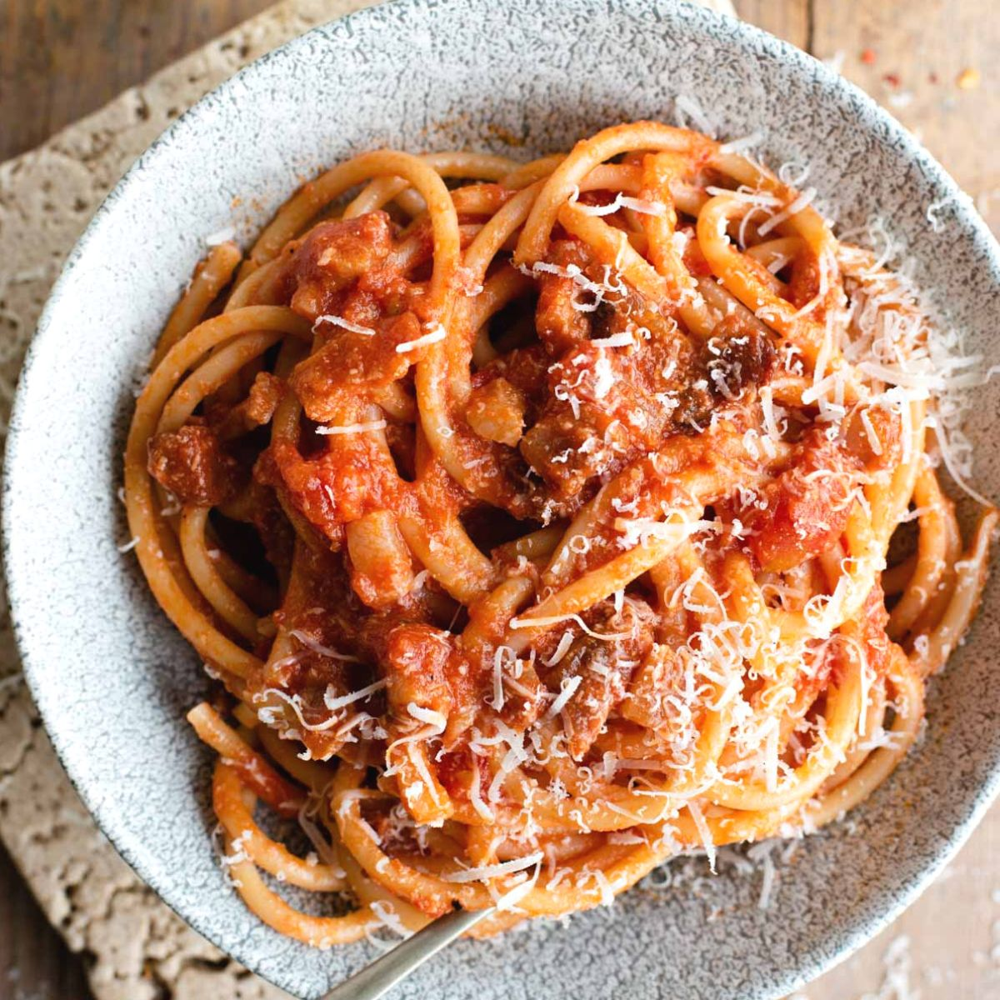

Amatriciana

The pasta is good
This is a recipe for the Roman pasta dish Amatriciana. It is one of the four classic Roman pastas along with Gricia, Carbonara, and Cacio e Pepe.
Ingredients
- 500g Bucatini Pasta - Ideally bronze cut
- 32oz whole San Marzano tomatoes - canned
- 100g Pecorino Romano - fresh grated
- 100g Guanciale - cut into small dice
- Put a pot of salted water on to boil
- Slowly sweat down the guanciale
- Add the tomatoes and cook them together until it cooks down
- Finish with the cheese
- Boil the pasta